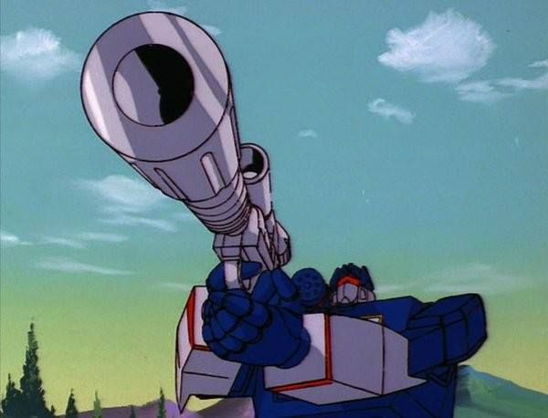

Megatron se transforma en una pistola
En las primeras versiones de Transformers, Megatron —el líder de los Decepticons— tenía una transformación inusual: se convertía en una pistola. Esto lo diferenciaba del resto de los personajes, que generalmente adoptaban formas de vehículos. Su diseño estaba inspirado en la pistola Walther P38, y aunque parecía una elección extraña, tenía un trasfondo interesante.
El hecho de que un personaje tan poderoso se convirtiera en un arma portátil mostraba su papel simbólico como un instrumento de violencia y control. Cuando era necesario, otro Decepticon lo empuñaba, lo que añadía una dimensión de cooperación entre villanos, aunque también reflejaba su dependencia en ciertas formas.
Con el tiempo, por motivos legales y de marketing, Megatron fue rediseñado para transformarse en vehículos más imponentes, como tanques o jets. Sin embargo, su versión como pistola sigue siendo una parte importante del legado original de la serie, y representa un momento en que las reglas del diseño de personajes estaban menos definidas… y mucho más atrevidas.
← Volver a curiosidades de Transformers